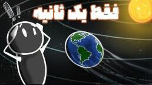

اگر گرانش یک ثانیه از کل جهان حذف شود چه میشود؟

تصور کن در اتاقت نشستهای، یک فنجان چای دستت است. یک چشم به هم زدن، آن نیروی نامرئی که همه چیز را کنار هم نگه میدارد برای یک ثانیه ما را به حال خودمان میگذارد. برای خودت، خانهات، زمین و حتی منظومهٔ شمسی چه میشود؟
گرانش چیست؟
گرانش مثل چسب مخفی کیهان است. نیرویی که سیارهها را دور خورشید میچرخاند، نمیگذارد در فضا شناور شویم و چای را داخل فنجان نگه میدارد. اگر حتی برای یک لحظه ناپدید شود، اثرش فوری و خیلی بزرگ است.
همان لحظه که گرانش خاموش شود، هر چیزی که محکم به جایی وصل نباشد شروع به شناور شدن میکند. این فقط مال ما و فنجان نیست. کل زمین از سطح تا هسته، کل منظومهٔ شمسی و حتی کهکشان، یک لحظه بیوزنی کامل را تجربه میکنند.
زمین بدون گرانش
گرانش زمین همه چیز را با شتابی حدود ۹٫۸ متر بر مجذور ثانیه به طرف خودش میکشد. اگر این نیرو حذف شود، هر چیزی که روی زمین است — اقیانوسها، جو، پوسته، آدمها — دقیقاً با همین شتاب شروع به حرکت به بالا میکند.
با فرمول جابهجایی در شتاب یکنواخت میشود حساب کرد که در آن یک ثانیه، آب اقیانوسها حدود ۴٫۹ متر بالا میروند. در مقیاس یک لیوان کوچک است؛ در مقیاس اقیانوس عدد خیلی بزرگی است.
حالا گرانش برمیگردد. کل آن آب یکباره به طرف زمین سقوط میکند؛ باز با شتاب ۹٫۸. از ارتفاع ۴٫۹ متری، سرعت برخورد حدود ۳۵ کیلومتر بر ساعت میشود. نتیجه میتواند موجهایی شبیه سونامی بسازد که ارتفاعشان در بعضی جاها خیلی بالا میرود و شهرهای ساحلی را تهدید کند.
پوستهٔ زمین
زمین لایههایی دارد: جو، پوسته، گوشته، هستهٔ بیرونی و هستهٔ داخلی. در آن ثانیه، پوسته و جو بیشتر از بقیه اثر میگیرند.
پوسته برای لحظهای بیوزن میشود. بدون کشش به پایین، و با فشار درونی زمین، ممکن است کمی از گوشته جدا شود. جابهجایی پوسته حدود ۲ تا ۵ سانتیمتر است. عدد کوچک به نظر میآید؛ اما اگر همان ۵ سانتیمتر برگردد، سرعت برخورد نزدیک ۱ متر بر ثانیه میشود. جرم پوسته آنقدر زیاد است که همین برخورد کوچک میتواند زمینلرزههای بسیار بزرگ در سراسر جهان راه بیندازد و آتشفشانهای زیادی را یکباره بیدار کند.
جو زمین
در نبود گرانش، جو شروع به گسترده شدن و پراکنده شدن به سمت بالا میکند. مولکولهای هوا از سطح فاصله میگیرند چون نیرویی آنها را پایین نگه نمیدارد.
در طول یک ثانیه، مولکولها بهخاطر انرژی گرماییشان بالا میروند. اگر سرعت گرمایی متوسط مولکولهای اکسیژن را حدود ۵۵۰۰ متر بر ثانیه بگیریم، لایههای بیرونی جو ممکن است چند کیلومتر به بیرون بروند و لایههای پایینتر هم چند صد متر بالاتر بیایند.
وقتی گرانش برگردد، جوی که باد کرده ناگهان به سمت سطح فشرده میشود. فشار هوا تند عوض میشود و بادهایی به قدرت طوفانهای خیلی بزرگ در سراسر دنیا راه میافتد؛ همراه با باران و سیل.
منظومهٔ شمسی و کیهان
سیارهها مدارشان را مدیون گرانش خورشیدند. اگر گرانش کل کیهان یک لحظه قطع شود، همه از مسیرشان منحرف میشوند. یک ثانیه در زندگی ما کوتاه است؛ در مقیاس مدارها اثرش میماند.
شاید زمین دوباره دور خورشید بچرخد، اما مدار قبلیاش دقیق سر جایش نیست. همین تغییر کوچک میتواند در درازمدت فصلها و آبوهوا را عوض کند. اگر دید را از چند سال جلوتر ببریم، احتمال بههمخوردن مسیر ستارهها و کهکشانها هم مطرح میشود.
یک تصویر ساده: چند آهنربا نزدیک هم روی میز. اگر میز را تکان بدهی ممکن است به هم بخورند. کیهان خیلی بزرگتر است. اگر این خاموشی را از منظومهٔ خودمان حساب کنیم، رسیدنش به جاهای دور مثل تکان دادن یک پتوی خیلی بزرگ میماند؛ موج از این سر تا آن سر زمان میبرد. شاید میلیونها سال نوری طول بکشد تا آن سر کیهان اثر آن یک ثانیه را حس کند.
از این یک ثانیه چه میماند؟
اگر کسی از موج ساحل، زمینلرزه، طوفان و تغییر فشار جو جان سالم به در ببرد، شاید فقط با چند جایزخم کوچک از برخورد به زمین این خاطره را برای بعد تعریف کند. این یک آزمایش فکری است تا بفهمیم گرانش چقدر آرام، و در عین حال چقدر محکم، همه چیز را سر جایش نگه داشته است. تا فکر بعدی، کنجکاو بمان.